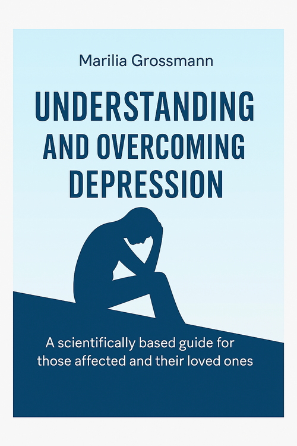

Understanding and Overcoming Depression
Product profile · Marketplace data 2026-10-09 · Sales-page research 2026-10-09 · Categories: Health & Fitness

Marketplace record
| Product type | E-books |
|---|---|
| Price | $11.19 (Single payment) |
| Affiliate commission | 60% |
| Refund window | Per the vendor's sales page — check the official page before buying |
| Vendor | Hei-Mel (listed since 2025-09-29) |
| Marketplace stats* | Cart conversion — · cancel rate — · affiliate earnings/sale $6.71 |
* Vendor-side marketplace statistics reported by Digistore24; they depend on traffic quality and are not a forecast.
Vendor's marketplace description
Understanding and Overcoming Depression is a practical guide designed to help you recognize, understand, and gently overcome the challenges of depression. With clear insights, empowering strategies, and supportive advice, this eBook provides tools for emotional healing, building resilience, and regaining a sense of hope and balance in everyday life.
From the vendor's sales page
Page title: eBook - Understanding and Overcoming Depression - Marilias Welt
Headline
eBook - Understanding and Overcoming Depression
Section headlines
- What is Depression?
- What Exactly Happens in Depression?
- How to Recognize Depression? (Key Symptoms)
Opening copy
Depression is more than just temporary sadness – it's a serious medical condition that affects thinking, emotions, and behavior. This book provides scientifically grounded knowledge, explores different forms of depression, explains symptoms and causes, and presents proven treatment options along with self-help strategies.
It helps you better understand the illness, find hope, and take concrete steps toward recovery – whether for yourself or for someone you care about.
“Understanding and Overcoming Depression” – the compassionate guide for greater emotional well-being.
Prices mentioned on the page: $10.00
Guarantee language found: “60” — always confirm the current terms on the official page before relying on it.
CTA buttons: “Buy Now” · “Discover the eBook now”
Research method: raw HTML fetch · 2999 words on page · quality: rich · researched 2026-10-09. Full research file (MD) ↗
Where to check it out
Read the vendor's full sales page (current price, guarantee terms and bonuses are listed there):
View official sales page
That link is an affiliate link — if you buy through it we earn a commission from the vendor at no extra cost to you.